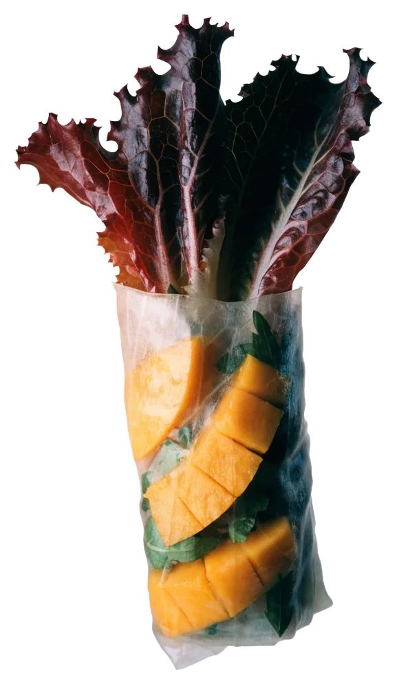
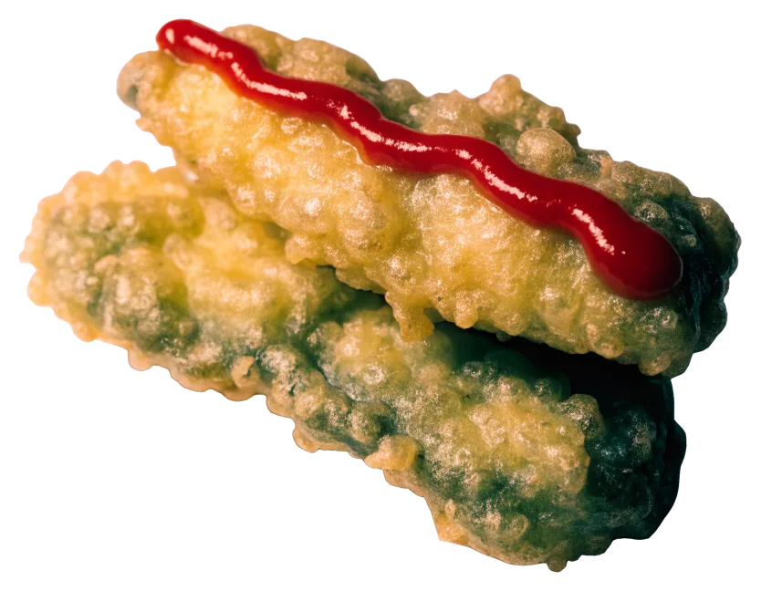
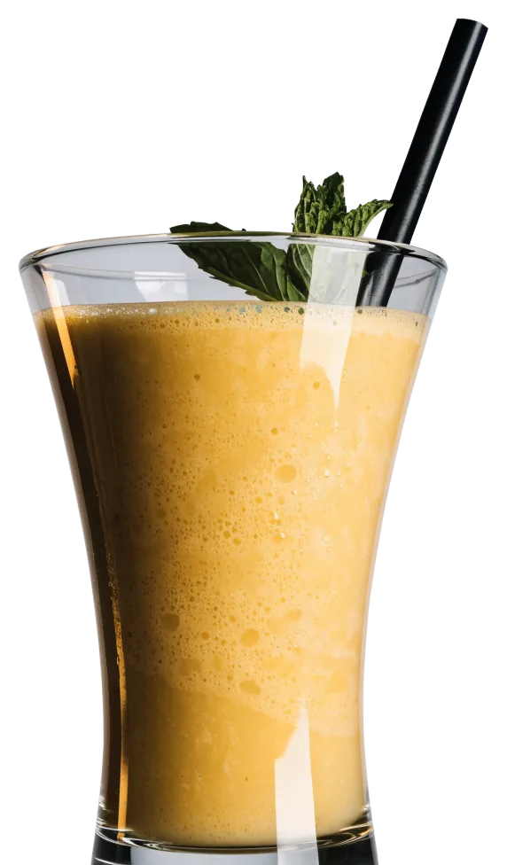
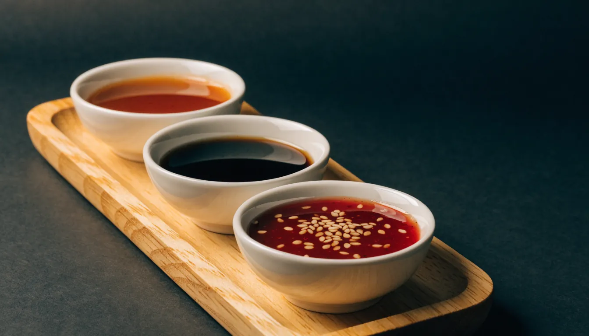

· täglich 11:30–22:00
TA Vegan House
Asiatisch, vegan –
in vielen kleinen Schalen
für die Tischmitte.
Täglich 11:30 bis 22 Uhr in der Neuen Großen Bergstraße 11, Altona: Mittagstisch, Abendessen, zum Mitnehmen.
4,7714 Bewertungen auf Google
Foto: Mr. Wildlife · Google Maps

Heute
- Mo11:30–22
- Di11:30–22
- Mi11:30–22
- Do11:30–22
- Fr11:30–22
- Sa11:30–22
- So11:30–22
Montag bis Sonntag 11:30–22:00 Uhr. Mittags und abends dieselbe Karte.
Sommerrolle
In Reispapier gerollt, eins von vielen kleinen Gerichten.


Tisch reservieren
Für den Mittag, den Abend oder die größere Runde – in drei kurzen Schritten.
Zur AnfrageLage
Neue Große Bergstraße 1122767 Hamburg · Altona
Erkennungszeichen: schwarze Markise mit dem kleinen „ta“, große Glasfront, Pflanzkübel aus Holzlatten. Plätze draußen vor der Tür.
Route planen →Erst bestellen, dann teilen.
Bei TA kommen kleine asiatische Gerichte wie Tapas auf den Tisch: Frühlingsrollen, Tempura, Teigtaschen, marinierte Tofustreifen. Dazu große Gerichte wie rotes Curry mit Reis oder die Salatbowl mit Reisnudeln. Alles vegan.
Zwei, drei kleine Gerichte pro Person – den Rest teilt der Tisch.
- Küche
- vegan, asiatisch
- Mittag & Abend
- täglich 11:30–22:00
- Draußen
- Plätze vor der Tür
- Mitnehmen
- ja
- Dazu
- Kaffee, Bier, Wein, Desserts

Die kleinen Schalen
Schale um Schale landet auf dem Tisch. Eine Auswahl dessen, was bei TA bestellt wird.


Die Karte
Kleine Gerichte zum Teilen, große für sich allein, dazu Getränke und Desserts. Die vollständige Karte mit Preisen liegt vor Ort aus.

Kleine Gerichte
- Frühlingsrollenmit Salat und Dips
- Sommerrollenin Reispapier
- Tempuramit scharfer Sauce
- Teigtaschengefüllt
- Marinierte Tofustreifen
- Kleine asiatische Tapaswechselnd, zum Teilen
Große Gerichte
- Rotes Currymit Reis
- Salatbowl mit Reisnudeln
- Reisals Beilage
Getränke & Dessert
- Mango Lassimit Minze
- Kaffee
- Bier & Wein
- Desserts
Preise und alle Gerichte stehen auf der Karte vor Ort. Vorab fragen: 015566 451038
Bei TA in Altona
Foto: Mr. Wildlife · Google Maps Foto: Cenk A · Google Maps
Foto: Marion Klewin · Google MapsFoto: Maddy Broocks · Google Maps
Foto: Cenk A · Google Maps
Foto: Marion Klewin · Google MapsFoto: Maddy Broocks · Google Maps Foto: مروارید sadaf · Google Maps
Foto: مروارید sadaf · Google MapsWer kein Veganer ist, merkt es meist erst beim zweiten Blick in die Karte: Hier ist alles vegan, vom Tempura bis zum Lassi.
Ein Fach für Sie freihalten.
Tag, Uhrzeit, Personenzahl – wir rufen zur Bestätigung zurück. Für Gruppen ab neun Personen lieber direkt anrufen.
Anrufen · 015566 4510384,7714 Bewertungen auf Google